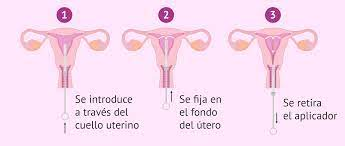
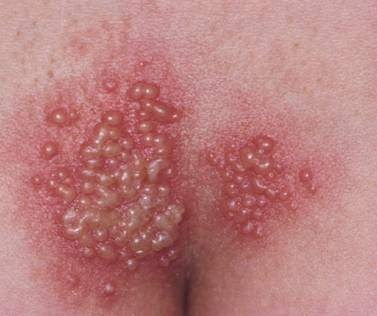
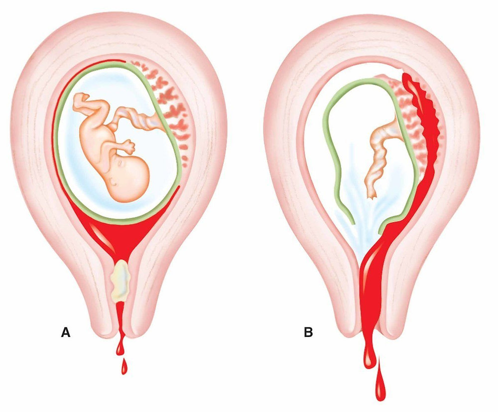

"Tener relaciones sexuales no puede convertirse en una obligacion es un acto que solo tu y tu pareja pueden compartir ,teniendo en cuenta que deben protegerse."

MÉTODOS ANTICONCEPTIVOS
ALGUNOS MÉTODOS ANTICONCEPTIVOS SON:
- CONDÓN MASCULINO
- CÓNDON FEMENINO
- PASTILLAS ANTICONCEPTIVAS
- PARCHE ANTICONCEPTIVO
- PASTILLA ANTICONCEPTIVA DE EMERGENCIA
- DISPOSITIVO INTRAUTERINO(DIU)
"Algunos metodos sirven durante un cierto tiempo o en algunos casos para una emergencia"
CONDÓN MASCULINO
El condón masculino es una funda de de látex que se coloca en el pene erecto antes de la relación sexual y que lo cubre por completo.
- ¿CÓMO ACTÚA?
- Impide que los espermatozoides entren al interior de la vagina en la relación sexual, pues actúa como barrera y con esto evita el embarazo.
Si se usa correctamente, El condón también disminuye la posibilidad de contraer una infección de transmisión sexual.
- EFECTIVIDAD
- Su efectividad como método anticonceptivo es del 85 al 95%. Si se usa correctamente la posibilidad de que falle disminuye.
- RECOMENDACIONES ANTES DE SU USO
-
- Verifica la fecha de caducidad
- Abre el paquete cuidando no romper el condón
- Coloca el condón, sin desenrollar, en la punta del pene erecto
- Aprieta la punta del condón mientras lo extiendes hasta cubrir todo el pene, evitando que queden burbujas de aire pues pueden romper el condón durante la relación y provocar escurrimientos.
- Si el hombre no está circuncidado, debe empujar la piel del pene hacia atrás hasta liberar el glande (cabeza del pene)
- Después de la eyaculación y antes de perder la erección, el pene debe ser retirado de la vagina sujetando el extremo del condón, evitando que se derrame el esperma
- Usa un nuevo condón en cada relación sexual
8.-Los condones nunca deben ser reutilizados
- VENTAJAS
-
- Es el único método anticonceptivo en el que participa el hombre en la planificación familiar
- Disminuye la posibilidad de infecciones transmitidas sexualmente incluyendo el VIH
- Son seguros
- Puede ser usado por hombres de cualquier edad
- Son fáciles de conseguir en muchos lugares (Unidades de Medicina Familiar, farmacias, supermercados, etc.)
- Ayudan a prevenir la eyaculación prematura
- No disminuye la sensibilidad, ni dificulta la eyaculación y el orgasmo
- Algunos hombres pueden sostener una relación sexual durante más tiempo cuando usan condón masculino, esto resulta más gratificante tanto para él como para su pareja

CONDÓN FEMENINO
El condón femenino es un dispositivo utilizado para el control natal. Al igual que el condón masculino, crea una barrera para impedir que el espermatozoide logre llegar al óvulo.
- ¿CÓMO ACTÚA?
- El condón femenino brinda protección contra el embarazo y también contra las infecciones que se propagan durante el contacto sexual, como el VIH. Sin embargo, se cree que no funciona tan bien como el condón masculino para proteger contra las infecciones de transmisión sexual (ETS).
- EFECTIVIDAD
- El condón femenino tiene una efectividad de entre el 75% y el 82% en el uso habitual. Cuando se utiliza correctamente todo el tiempo, el condón femenino tiene una efectividad del 95%.
- RECOMENDACIONES DE USO
-
- Encuentre el anillo interno del condón y sosténgalo entre los dedos pulgar y medio.
- Apriete el anillo e insértelo lo más profundamente posible dentro de la vagina, asegurándose de que el anillo interior esté más allá del hueso púbico.
- Deje el anillo externo por fuera de la vagina.
- Asegúrese de que el condón no se haya torcido.
- Antes de la relación sexual, y durante esta si es necesario, aplique un par de gotas de lubricante a base de agua en el pene.
- Después de la relación sexual y antes de incorporarse, apriete y gire el anillo externo para asegurarse de que el semen permanezca en el interior.
- Retire el condón halando suavemente. Utilícelo sólo una vez.
- VENTAJAS:
- Se puede utilizar durante la menstruación, el embarazo o después de un parto reciente.
- Le permite a una mujer protegerse del embarazo y de las infecciones de transmisión sexual sin depender del condón masculino
- Protege del embarazo y de las infecciones de transmisión sexual.

PASTILLAS ANTICONCEPTIVAS
Las píldoras anticonceptivas (BCPs, por sus siglas en inglés) contienen 2 formas de hormonas artificiales denominadas estrógeno y progestina. Estas hormonas se producen de manera natural en los ovarios de una mujer. Las BCPs pueden contener ambas hormonas o progestina solamente.
Ambas hormonas impiden que el ovario de una mujer libere un óvulo durante su ciclo menstrual (lo que se llama ovulación). Ellas hacen esto cambiando los niveles de las hormonas naturales que el cuerpo produce.
La progestina también hace que la mucosidad alrededor del cuello uterino de una mujer se vuelva espesa y pegajosa. Esto impide que los espermatozoides entren al útero.
- ¿CÓMO ACTÚAN?
- Contienen hormonas similares a las que produce
el cuerpo de la mujer, las cuales inhiben la ovulación, cambian la consistencia de la capa interna
el útero y las características del moco cervical,
impidiendo de esta manera que ocurra un embarazo.
- EFECTIVIDAD
- Es un método muy efectivo para evitar un embarazo. De cada 100 mujeres que las usan correctamente, sólo 1 ó 2 pueden quedar embarazadas.
Las pastillas pueden ser utilizadas sin problema
por adolescentes, sólo debes asegurarte de tomar
una pastilla diariamente.
- RECOMENDACIONES DE USO
-
- Unas se toman diariamente durante 28 días, sin
interrupción.
- Otras se toman durante 21 días diariamente sin
interrupción, luego se suspenden por 7 días y se
vuelven a tomar nuevamente el octavo día.
- VENTAJAS
- •Es un método muy efectivo si se usa correctamente.
•El efecto anticonceptivo es reversible. Cuando
las píldoras dejan de tomarse, la fertilidad regresa
rápidamente.

PARCHE ANTICONCEPTIVO
El parche anticonceptivo es un parche delgado, cuadrado, de 1¾ pulg. (4.5 cm) y de color beige que se pega en la piel. Este parche libera hormonas que llegan al torrente sanguíneo a través de la piel para prevenir un embarazo.
- ¿CÓMO ACTÚAN?
- La combinación de dos hormonas (progesterona y estrógeno) en el parche previene la ovulación (la liberación de un óvulo desde los ovarios durante el ciclo menstrual mensual). Si se libera un óvulo, puede haber un embarazo porque nada impide que un espermatozoide lo fertilice.
Las hormonas del parche también ensanchan la mucosidad del cuello del útero (formada por las células del cuello del útero). El cuello del útero es la parte del útero que llega al interior de la vagina y es la entrada hacia el útero. El engrosamiento de las mucosidades del cuello del útero hace que a los espermatozoides les resulte más difícil entrar en el útero y llegar a los óvulos que puedan haber sido liberados. A veces, las hormonas del parche también pueden afectar el revestimiento del útero para que al óvulo fertilizado le cueste sujetarse a la pared del útero.Al igual que otros métodos anticonceptivos en los que se usan hormonas, como las píldoras anticonceptivas o el anillo anticonceptivo, los parches anticonceptivos se utilizan de acuerdo con el ciclo menstrual mensual.
- EFECTIVIDAD
- Los estudios continuos sugieren que el parche anticonceptivo tiene el mismo nivel de eficacia que las píldoras anticonceptivas. Esto significa que aproximadamente 9 de cada 100 parejas tendrán un embarazo no deseado durante el primer año de uso. Por supuesto, las posibilidades de un embarazo dependen del uso correcto del parche. Si se retrasa la colocación del parche, se olvida colocarlo una semana o se lo quita antes de tiempo, la eficacia de este método se reduce y las posibilidades de un embarazo aumentan.
Si una persona pesa más de 198 libras (90 kg), el parche anticonceptivo podría perder eficacia para prevenir un embarazo. Algunas afecciones y ciertos medicamentos también pueden interferir con el efecto del parche. La eficacia del parche también depende de si resulta cómodo utilizarlo y si se lo usa todo el tiempo.
- RECOMENDACIONES DE USO
-
- Una mujer se coloca el parche el primer día de su ciclo menstrual o el primer domingo después de que haya comenzado su ciclo menstrual.
- Cambiará el parche de la piel una vez a la semana durante tres semanas seguidas.
- El parche se debe aplicar en una de las siguientes cuatro zonas: el abdomen, las nalgas, el brazo o la parte superior del torso; pero nunca sobre los pechos.
- La cuarta semana, no se usa el parche, y es en ese momento cuando debería comenzar el ciclo menstrual.
Es importante utilizar otro método anticonceptivo durante los primeros 7 días de uso del parche para prevenir un embarazo.

PASTILLA ANTICONCEPTIVA DE EMERGENCIA
Anticoncepción de Emergencia o Anticoncepción Hormonal Postcoito. Se le conoce también como píldora del día siguiente. Es un método anticonceptivo que puedes utilizar sólo en casos de emergencia, para prevenir un embarazo no planeado, y se toma en los tres días siguientes de una relación sexual sin protección.
- ¿COMO ACTUAN?
- Puede considerar el uso de anticonceptivos de emergencia después de tener relaciones sexuales sin protección cuando existe la posibilidad de que seas fértil.
Pero saber cuándo eres fértil puede ser difícil. Si quieres evitar un embarazo, es mejor tomar precauciones y considerar la anticoncepción de emergencia. Oficialmente, la ventana fértil va desde 5 días antes de que ocurra la ovulación, hasta 1 día después. Pero el tiempo de la ventana fértil puede cambiar de ciclo a ciclo, y
se ha demostrado que es muy variable incluso para aquellas personas que perciben su ciclo como "regular". Más de 7 de cada 10 mujeres pueden estar en su ventana fértil antes del día 10 de su ciclo, o después del día 17. Los ciclos pueden fluctuar hasta seis años después de que a alguien le llegue su periodo por primera vez,
lo que significa que la ovulación puede ocurrir antes o después en cada ciclo. Factores como el estrés, los cambios en el sueño, el jet lag y el ejercicio intenso también pueden afectar el momento de la ovulación, causando con mayor frecuencia que se retrase. La ovulación también se ve afectada por ciertas afecciones de salud
que influyen sobre las hormonas reproductivas. Conocer el momento exacto de la ovulación suele requerir el uso de métodos caseros como el seguimiento de la temperatura corporal basal o un kit de detección de la ovulación, o pruebas realizadas en el consultorio de tu proveedor de atención médica.Si no sabes con seguridad si eres fértil o no, el uso de la anticoncepción de emergencia puede ser una buena idea. Utilizar un método es más efectivo que nada. Aunque la anticoncepción de emergencia no pueda ser la primaria, algunas personas pueden optar por tener a mano una píldora del día después en caso de emergencia, para que no tengan que perder tiempo obteniendo una píldora si alguna vez la necesitan rápidamente. La píldora del día después se puede comprar por adelantado en muchas farmacias, clínicas médicas y por Internet.
- EFECTIVIDAD
- Si se toma antes de 24 horas, la efectividad es alrededor del 90%. Transcurridas más de 72 horas,
la efectividad disminuye al 75% (ya que estos compuestos no actúan después de que se ha efectuado la fertilización).
- RECOMENDACIONES DE USO
- Se recomienda su uso dentro de los 5 días posteriores a la relación sexual, pero cuanto antes se utilicen después de la relación, mayor es su eficacia.
DISPOSITIVO INTRAUTERINO(DIU)
El Dispositivo Intrauterino de cobre (DIU) es un método anticonceptivo seguro y eficaz que sirve para evitar temporalmente un embarazo.
- ¿CÓMO ACTÚAN?
- Está elaborado de plástico flexible, tiene una rama vertical y una horizontal a manera de T. La rama vertical está rodeada de un alambre de cobre, que impide el paso de espermatozoides. Se coloca dentro de la matriz, mediante un tubo especial diseñado para ello.

- EFECTIVIDAD
- La efectividad anticonceptiva es mayor al 98%. El periodo de acción anticonceptiva es de 10 años para el DIU T de cobre estándar y el DIU T para mujeres nulíparas.
- RECOMENDACIONES DE USO
- DIU puede aplicarse durante la menstruación o en cualquier momento, si existe la seguridad de no estar embarazada, como puede ser: después del parto, durante una cesárea o después de un aborto (siempre y cuando no haya evidencia de infección).

INFECCIONES DE TRANSMICIÓN SEXUAL(ITS)
Las Infecciones de Transmisión Sexual (ITS), como su nombre lo indica, son infecciones que pasan de una persona a otra durante una relación sexual (vaginal, anal u oral) y pueden producir enfermedades. Anteriormente se las conocía como enfermedades venéreas.
Son causadas por virus, bacterias o parásitos.
LAS ITS MÁS FRECUENTES SON:
- SÍFILIS
- GONORREA
- CLAMIDIA
- HERPES SIMPLE
- HEPATITIS B
- HEPATITIS C
- VPH O HPV
- VIH
SÍFILIS
- Síntomas
- Al principio una llaga o ampolla dura (generalmente una sola) en la boca, el ano, la vagina o el pene, que no produce dolor y que desaparece sola a los 15 días, aunque no se haga tratamiento. Esto no significa que la infección se haya terminado.
Muchas veces, cerca de donde está la lesión, hay un ganglio que se inflama.
Algunos meses más tarde, si no se hace tratamiento pueden aparecer erupción (o ronchas) en el cuerpo, lesiones en la boca, fiebre e inflamación de los ganglios,
caída del cabello, malestar general, verrugas o condilomas en la zona genital.

- Tratamiento
-
La sífilis se cura con un tratamiento que es sencillo y está disponible en todos los centros de salud y hospitales. Se trata de la aplicación de penicilina en una o más dosis de acuerdo con la etapa de la sífilis en la que encuentre la persona.
También se recomienda tratar a la/s pareja/s sexual/es.
GONORREA


- Síntomas
- Es una infección muy común, especialmente en jóvenes de 15 a 24 años. Puede causar infecciones en los genitales, el recto y la garganta.
En los varones los síntomas pueden ser:
sensación de ardor al orinar
secreción de color blanco, amarillo o verde del pene
dolor o inflamación en los testículos (aunque esto es menos común)
En las mujeres, pueden ser:
dolor o sensación de ardor al orinar
aumento de la secreción vaginal
sangrado vaginal entre periodo
También puede presentarse de forma asintomática.
- Tratamiento
- El tratamiento de la gonorrea es simple, y se realiza de la misma manera en hombres y en mujeres. Actualmente se indica una dosis única de antibiótico. También se recomienda tratar a la/s pareja/s sexual/es.
CLAMIDIA

- Síntomas
- En las mujeres, cuando hay síntomas, son:
secreción vaginal anormal
sensación de ardor al orinar
En los varones:
secreción del pene
sensación de ardor al orinar
dolor e inflamación de uno o ambos testículos (aunque esto es menos común)
También puede presentarse de forma asintomática.
- Es un tratamiento simple, rápido y con alto índice de curación. También se recomienda tratar a la/s pareja/s sexual/es.
HERPES SIMPLE

- Síntomas
- Primero, la persona puede sentir un ardor, luego aparecen ampollitas múltiples y pequeñas que se rompen y pueden formar una úlcera o lastimadura dolorosa.
Las lesiones desaparecen entre los tres y los quince días y muchas veces reaparecen al tiempo.
Con o sin síntomas, el virus se puede transmitir de una persona a otra.
También, puede pasar al bebé durante el parto.
- Tratamiento
- Si bien no tiene una cura definitiva, con medicación se lo puede controlar y así disminuir los síntomas, reducir la frecuencia con la que aparecen y bajar la probabilidad de transmisión.
HEPATITIS B

- Síntomas
- Generalmente no aparecen síntomas en el momento de la infección.
Algunas personas presentan coloración amarillenta de la piel y los ojos (ictericia), orina oscura, fatiga extrema, náusea, vómitos y dolor abdominal que suelen durar varias semanas.
- Tratamiento
- Hay una vacuna efectiva para prevenir esta infección que, desde el año 2000
HEPATITIS C
 SíntomasSe transmite principalmente a través de la sangre. De manera menos frecuente, se puede transmitir por vía sexual y pasar de la madre infectada a su hijo.
Aproximadamente el 80% de las personas no presenta síntomas luego de la infección inicial.
En los casos en que aparecen son: fiebre, cansancio, inapetencia, náuseas, vómitos, dolor abdominal, orinas oscuras, heces claras, dolores articulares e ictericia (coloración amarillenta de la piel y los ojos).
No se transmite a través de la leche materna, los alimentos o el agua, ni por contacto ocasional.
SíntomasSe transmite principalmente a través de la sangre. De manera menos frecuente, se puede transmitir por vía sexual y pasar de la madre infectada a su hijo.
Aproximadamente el 80% de las personas no presenta síntomas luego de la infección inicial.
En los casos en que aparecen son: fiebre, cansancio, inapetencia, náuseas, vómitos, dolor abdominal, orinas oscuras, heces claras, dolores articulares e ictericia (coloración amarillenta de la piel y los ojos).
No se transmite a través de la leche materna, los alimentos o el agua, ni por contacto ocasional.
- Tratamiento
- Cuando es diagnosticada se recomienda descanso, una nutrición adecuada, líquidos y medicamentos antivirales específicos.
En los últimos tres años aparecieron —y seguirán desarrollándose— gran cantidad de opciones terapéuticas de gran efectividad, con tasas de curación de entre el 90 y el 100%, tratamientos más cortos y menos efectos adversos.
VPH O HPV

- Síntomas
- La mayoría de las personas con HPV no tiene síntomas.
Algunos tipos de HPV (llamados 6 y 11) pueden producir verrugas genitales.
Hay otros tipos de HPV que, con el tiempo, pueden provocar cáncer. Dos en particular (los tipos 16 y 18) causan la mayoría de los casos.
- Tratamiento
- Existe una vacuna contra el HPV en el Calendario Nacional de Vacunación que te protege de los tipos de VPH de alto riesgo 16 y 18 —causa del 77% de los casos de cáncer de cuello uterino— y de los tipos 6 y 11 que provocan más del 90% de las verrugas genitales.
Los niños y niñas de 11 años deben recibir dos dosis con intervalo mínimo de 6 meses.
Las verrugas genitales pueden ser extirpadas con diferentes procedimientos médicos
VIH

- Síntomas
- Durante mucho tiempo (pueden ser varios años) las personas que tienen VIH no presentan síntomas.
Pero si no hacen tratamiento, el virus se multiplica y va debilitando las defensas. En estos casos las personas pueden tener infecciones múltiples, trastornos digestivos o neurológicos y algunos tipos de cáncer. Esta etapa de la infección es la que se conoce como sida.
- Tratamiento
- Existen tratamientos que controlan el desarrollo del virus, aunque no lo eliminen totalmente. Así, las personas con VIH no llegan a tener sida.
La medicación permite también que las personas que llegaron a la etapa de sida recuperen sus defensas y dejen de tener síntomas.
¿Cómo se propagan las ETS?
Puedes contraer una ETS al tener relaciones sexuales vaginales, anales u orales con alguien que tenga alguna de ellas. Cualquier persona sexualmente activa puede contraer una enfermedad de transmisión sexual. Ni siguiera
es necesario hacer el acto sexual completo (tener relaciones sexuales anales o vaginales) para contraer una ETS. Esto se debe a que algunas de estas enfermedades, como el herpes y el VPH, se propagan por el contacto de piel a piel.
¿Qué puedo hacer para protegerme?
- La manera más segura de protegerte contra las enfermedades de transmisión sexual es no tener relaciones sexuales. Esto significa no tener ninguna relación sexual vaginal, anal u oral (“abstinencia”). Hay que considerar muchas cosas antes de tener relaciones sexuales. Está bien decir “no” si no deseas tener relaciones sexuales.
- Si decides tener relaciones sexuales, tanto tú como tu pareja deberían hacerse antes una prueba de ETS. Asegúrate de que tú y tu pareja usen un condón de principio a fin cada vez que tengan relaciones sexuales orales, anales o vaginales. Sepan dónde conseguir condones y cómo usarlos correctamente. No es seguro dejar de usar condones a menos que ambos se hayan hecho una prueba de ETS, sepan los resultados, y estén en una relación monógama mutua.
- La monogamia mutua significa que tanto tú como tu pareja están de acuerdo en tener contacto sexual solamente entre ustedes. Esto puede ayudar a protegerse contra enfermedades de transmisión sexual, siempre y cuando ambos se hayan hecho pruebas de detección y sepan que no tienen ninguna de estas enfermedades.
- Antes de tener relaciones sexuales, habla con tu pareja sobre cómo vas a prevenir las ETS y el embarazo. Si piensas que estás listo(a) para tener relaciones sexuales, también debes estarlo para proteger tu cuerpo. También deberías hablar antes con tu pareja sobre lo que harás o no harás sexualmente. Tu pareja debe respetar siempre tu derecho a decir que no a cualquier cosa que te resulte incómoda.
- Asegúrate de conseguir la atención médica que necesites. Pregúntale a un médico o a un enfermero sobre las pruebas de ETS y las vacunas contra el VPH y la hepatitis B.
- Las niñas y las mujeres jóvenes podrían tener necesidades adicionales para proteger su salud reproductiva. Habla con tu médico o enfermero acerca de las pruebas de detección del cáncer de cuello uterino que se realizan periódicamente y las pruebas de clamidia y gonorrea. Quizás desees hablar también sobre el embarazo no planificado y los métodos anticonceptivos.
- Evita combinar el consumo de alcohol o drogas recreativas con las relaciones sexuales. Si consumes alcohol y drogas, tienes más probabilidades de adoptar conductas riesgosas, como no usar un condón o tener relaciones sexuales con alguien con quien normalmente no las tendrías.
EMBARAZOS
Se estima que 16 millones de niñas de edades comprendidas entre los 15 y los 19 años dan a luz cada año, y un 95% de esos nacimientos se producen en países en desarrollo. Las niñas de entre 10 y 14 años tienen cinco veces más probabilidades de morir durante el embarazo y el parto. Las niñas de 15 a 19 años tienen el doble de probabilidades que las de más de 20 de morir en el parto o el embarazo y la tasa de mortalidad de sus neonatos es aproximadamente un 50% superior. Cada año, unos 3 millones de niñas de 15 a 19 años se someten a abortos peligrosos.
La Organización Mundial de la Salud (OMS) calcula que aproximadamente 17 millones de adolescentes dan a luz cada año. No es ninguna casualidad que el embarazo precoz sea la segunda causa de mortalidad en chicas de 15 a 19 años.
Es muy importante conocer las causas del embarazo en la adolescencia, los riesgos que tiene asociados y también las consecuencias que puede provocar en la madre, el niño o la niña e incluso su impacto familiar.
RIESGOS
Una vez entendemos cuáles son las principales causas, es importante hacer hincapié en las consecuencias y riesgos que supone un embarazo adolescente. La frase que resume gran parte del problema la redactó la Organización Mundial de la Salud: “la adolescencia es el periodo de vida en el cual el individuo adquiere la capacidad reproductiva, transita los patrones psicológicos de la niñez a la adultez y consolida la independencia socioeconómica”.
En el caso de los embarazos precoces, esta realidad se hace añicos, pero eso no es lo peor: cuanto más joven es la madre, más peligrosa es esta situación: malnutrición, partos prematuros, niños y niñas con trastornos en el desarrollo y malformaciones, así como un 50 % de probabilidades más de morir en las primeras semanas de vida; en la madre: todas las complicaciones médicas del feto en desarrollo también le afectan a nivel físico, pero, además, en muchos casos suponen:
Falta de atención médica por desconocimiento del embarazo.
Riesgo de preeclampsia y eclampsia.
Riesgo de fístula obstétrica, una lesión invisibilizada y con efectos. devastadores sobre la vida de miles de mujeres.
Alta mortalidad de la madre.
Complicaciones debido a los abortos clandestinos, como sepsis o hemorragias graves.
Embarazo unido a enfermedades de transmisión sexual.
Consecuencias del embarazo en la adolescencia
Tanto a nivel psicológico como también social, las consecuencias del embarazo en la adolescencia pueden ser muy graves. Estas son algunas de las que nos encontramos de forma habitual:
Abandono de los estudios: sobre todo dependiendo del contexto y el nivel socioeconómico de la familia.
Abortos: tanto provocados como espontáneos, además de los riesgos de caer en el mercado negro en países donde esta práctica no está legalizada.
Inestabilidad familiar: es frecuente que la relación entre los progenitores no dure mucho y que, al tratarse de adolescentes a cargo de hijos, se desarrolle un ambiente familiar inestable.
Natalidad no controlada: en países en vías de desarrollo, implica tener un mayor número de hijos sin poner medidas de control que eviten esta situación.
Problemas psicológicos: las madres adolescentes a menudo sienten miedo a ser rechazadas, ansiedad y estrés, así como también sufren problemas familiares, rechazo del bebé o desarrollan otros trastornos emocionales de gravedad.
Dependencia: a menudo estas madres están en una situación de necesidad económica y afectiva que le vincula a relaciones familiares disfuncionales y perjudiciales.
PREVENCION
Muchos de estos obstáculos están hallando respuesta en una necesaria educación en la igualdad de género y en políticas que ayudan a empoderar a las mujeres y sus derechos en la sociedad. De esta manera, se busca el mejor modo de conseguir un cambio en la tradición, el rol social o una mejor situación socioeconómica. La pobreza tiene la misma relación directa en el embarazo adolescente en Bangladesh, Níger o en el 30 % de la población británica de ingresos bajos, salvando las distancias, puesto que una persona en situación de pobreza o exclusión en Reino Unido no sufre las mismas carencias que una persona en situación de pobreza en la India.
Por tanto, algunas de las medidas efectivas con la que podemos fomentar la prevención del embarazo en la adolescencia son las siguientes:
Ofrecer programas de concienciación sobre la prevención del embarazo.
Fomentar una educación sexual en las escuelas que advierta de los riesgos del embarazo en la adolescencia, así como del embarazo unido a enfermedades de transmisión sexual.
Concienciar a nivel familiar la importancia de prevenir estas situaciones, así como también ayudar a reconocer los síntomas del embarazo en adolescentes, para que puedan ayudar a sus hijas lo antes posible.
Promover empoderar a las mujeres y que aprovechen sus derechos en la sociedad.
Impulsar programas de Salud Pública que puedan ayudar a las adolescentes a prevenir embarazos.
Concienciar y ofrecer diferentes métodos anticonceptivos que permitan evitar los embarazos no deseados en la adolescencia.
Desde Ayuda en Acción creemos que trabajar por un mundo donde se termine con el embarazo en la adolescencia es crear políticas educativas y campañas de concienciación que permitan llevar los recursos anticonceptivos y la información necesaria a cualquier país, entendiendo y dando respuesta a los problemas que se derivan de cada contexto concreto. Con tu ayuda, seguimos luchando por los derechos de las mujeres.
ABORTO
El aborto es la interrupción y finalización prematura del embarazo de forma natural o voluntaria, hecha antes que el feto pueda sobrevivir fuera del útero. Un aborto que ocurre espontáneamente también se conoce como aborto espontáneo. Cuando se toman medidas deliberadas para interrumpir un embarazo, se llama aborto inducido. Se diferencia del parto prematuro o pretérmino, pues en este último sobrevive el feto.

TIPOS DE ABORTO
- Aborto espontáneo o aborto natural, resultante de causas no provocadas intencionadamente o accidentales.
- Aborto inducido, provocado intencionadamente, a menudo llamado interrupción voluntaria del embarazo (IVE). Según los medios usados, se diferencia:
Aborto con medicamentos o aborto no quirúrgico; tipo de aborto inducido provocado mediante la administración de medicamentos.
Aborto quirúrgico, tipo de aborto inducido provocado mediante técnicas quirúrgicas.
- Aborto terapéutico, un tipo de aborto inducido en el que median razones médicas de riesgo para la salud de la madre o del feto.
- Aborto indirecto, cuando se produce como consecuencia no intencionada (aunque pueda ser prevista) de una intervención médica dirigida a salvar la vida de la madre.
-
Muerte fetal, denominación específica cuando la edad gestacional es superior a 20 semanas.
- Aborto inseguro, cuando la práctica de sus condiciones pone en peligro la salud y la vida de la mujer embarazada
RIESGOS
- Aborto incompleto (no se retiran o se expulsan del útero todos los tejidos embrionarios).;
hemorragias (sangrado abundante.)
- Infecciones.
- Perforación uterina (cuando se atraviesa el útero con un objeto afilado).
- Daños en el aparato genital y en órganos internos debidos a la introducción de objetos peligrosos en la vagina o el ano.
Página con caja de comentarios
Comenta